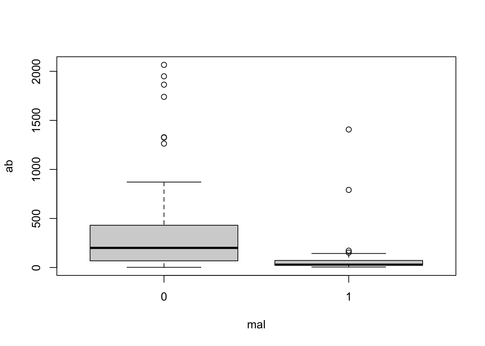
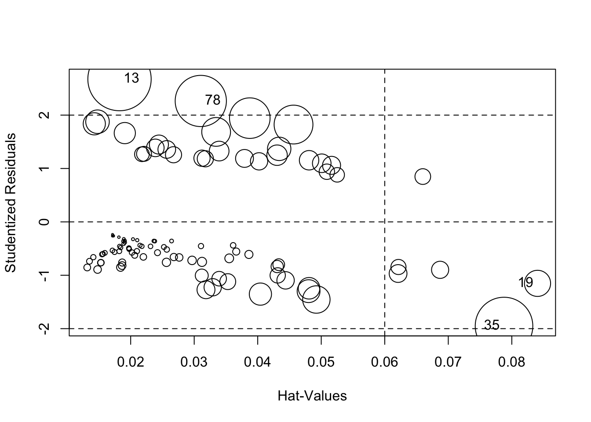
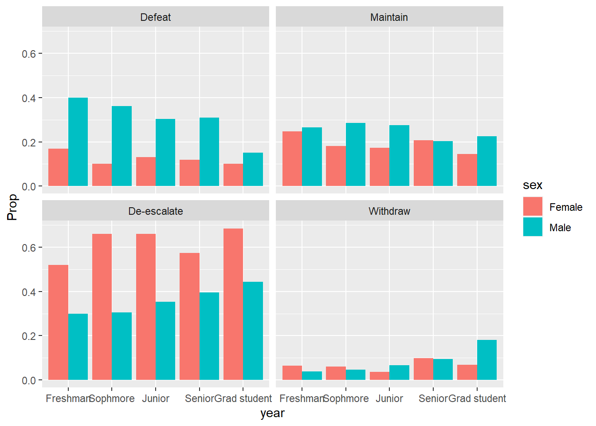

100 Hershey’s Kisses are put into a large cup and dumped on a table. We want to estimate the proportion of Kisses we can expect to land on their base. (Bilder and Loughin 2015) In our experiment we observe 39 out of 100. What is the 95% confidence interval on the proportion?
prop.test(x = 39, n = 100)##
## 1-sample proportions test with continuity correction
##
## data: 39 out of 100, null probability 0.5
## X-squared = 4.41, df = 1, p-value = 0.03573
## alternative hypothesis: true p is not equal to 0.5
## 95 percent confidence interval:
## 0.2955674 0.4929886
## sample estimates:
## p
## 0.39To get just the confidence interval:
pout <- prop.test(x = 39, n = 100)
pout$conf.int## [1] 0.2955674 0.4929886
## attr(,"conf.level")
## [1] 0.95This can be analyzed as an intercept-only binary logistic regression model. The confidence interval is slightly different.
m <- glm(cbind(39, 100-39) ~ 1, family = binomial)
plogis(confint(m))## 2.5 % 97.5 %
## 0.2980745 0.4874909There are many confidence intervals that can be calculated for proportions. The binom package calculates 11 of them. (Dorai-Raj 2022)
library(binom)
binom.confint(x = 39, n = 100)## method x n mean lower upper
## 1 agresti-coull 39 100 0.3900000 0.3000839 0.4880547
## 2 asymptotic 39 100 0.3900000 0.2944028 0.4855972
## 3 bayes 39 100 0.3910891 0.2972462 0.4861311
## 4 cloglog 39 100 0.3900000 0.2947601 0.4839396
## 5 exact 39 100 0.3900000 0.2940104 0.4926855
## 6 logit 39 100 0.3900000 0.2996112 0.4886334
## 7 probit 39 100 0.3900000 0.2985837 0.4879698
## 8 profile 39 100 0.3900000 0.2980814 0.4874917
## 9 lrt 39 100 0.3900000 0.2980690 0.4875128
## 10 prop.test 39 100 0.3900000 0.2955674 0.4929886
## 11 wilson 39 100 0.3900000 0.3001687 0.4879698The “prop.test” and “profile” versions are the two we calculated above.
The malaria data frame from the ISwR package has 100
rows and 4 columns. It contains data on a sample of 100 children aged
3–15 years from a village in Ghana. Based on observations during the
study period, the children were categorized into two groups: individuals
with and without symptoms of malaria. Model the risk of malaria
(mal) as a function of age (age) and
log-transformed antibody levels (log(ab)). (Dalgaard 2020)
library(ISwR)
data("malaria")To start, let’s take a quick look at the summary of the data using
the summary() function:
summary(malaria)## subject age ab mal
## Min. : 1.00 Min. : 3.00 Min. : 2.0 Min. :0.00
## 1st Qu.: 25.75 1st Qu.: 5.75 1st Qu.: 29.0 1st Qu.:0.00
## Median : 50.50 Median : 9.00 Median : 111.0 Median :0.00
## Mean : 50.50 Mean : 8.86 Mean : 311.5 Mean :0.27
## 3rd Qu.: 75.25 3rd Qu.:12.00 3rd Qu.: 373.8 3rd Qu.:1.00
## Max. :100.00 Max. :15.00 Max. :2066.0 Max. :1.00Looking at the summary, we can see that mal takes the values 0 and 1. The mean of mal is 0.27, which indicates that 27% of the data take the value 1, meaning 27% of children monitored showed symptoms of malaria.
We can see that age ranges from 3 to 15 and is slightly left-skewed. We can tell the skewness by comparing the median to the mean. Here, the median, 9.00, is slightly larger than the mean, 8.86. This indicates that more of the data is below the mean – the distribution is pulled out to the left, meaning there are slightly more younger children in this dataset.
From the summary we can also see that ab is very skewed, but in the opposite direction as age. Ab represents the antibody levels of the subjects and ranges from 2.0 to 2066.0. The median of ab, 111.0, is much smaller than the mean, 311.5. This indicates that ab is right-skewed. If we look at the 3rd quantile, we can see that 75% of the data is below 373.8. The maximum value of 2066.0 is much much larger than the 3rd quantile value, which may hint that the 2066.0 could be an outlier.
Looking at a box plot of the ab can give us a good visualization of this skewness and spread of the data. Here we plot the distribution of ab by mal and log(ab) by mal.
boxplot(ab ~ mal, data = malaria)
boxplot(log(ab) ~ mal, data = malaria)In the first box plot (ab by mal), because of the spread of the data, it appears very sqiushed and hard to interpret. We can see that children who did show symptoms of malaria (mal = 1) tend to have a lower antibody count while those who did not show symptoms (mal = 0) tend to have a higher antibody count. We can also see the right-skewness of the data.
The log transformed ab data is much clearer. We can see that same trend of lower antibody count for those who showed symptoms of malaria. With this plot we can get a feel for the values of the data: for those who showed no symptoms of malaria, we can see that 50% of the data falls between log(ab) = 4 and 6, whereas 50% of the data for those who did show symptoms of malaria falls between about log(ab) = 3 and 4.
We can also look at how age varies based on malaria symptoms:
library(ggplot2)
malaria$group = ifelse(malaria$mal == 0, 'no symptoms', 'symptoms')
ggplot(malaria, aes(x=age, fill = group)) +
geom_histogram(binwidth=1, color="black",) +
scale_fill_manual(values = c('no symptoms' = 'gray',
'symptoms' = 'cornflowerblue'))From the histogram, we can see that the ages of subjects are more or less uniformly spread from 3 to 15. From the box plot, we can see that subjects who showed symptoms of malaria tended to be of a younger age.
Now let’s build our model. We will use the glm()
function. glm() is used to fit a generalized linear model
to the data. To specify logistic regression, in the argument we set the
family = binomial(link = "logit").
lrm <- glm(mal ~ age + log(ab), family = binomial(link = "logit"), data = malaria)Now we look at a summary of the model:
summary(lrm)##
## Call:
## glm(formula = mal ~ age + log(ab), family = binomial(link = "logit"),
## data = malaria)
##
## Deviance Residuals:
## Min 1Q Median 3Q Max
## -1.8492 -0.7536 -0.4838 0.8809 2.5796
##
## Coefficients:
## Estimate Std. Error z value Pr(>|z|)
## (Intercept) 2.57234 0.95184 2.702 0.006883 **
## age -0.06546 0.06772 -0.967 0.333703
## log(ab) -0.68235 0.19552 -3.490 0.000483 ***
## ---
## Signif. codes: 0 '***' 0.001 '**' 0.01 '*' 0.05 '.' 0.1 ' ' 1
##
## (Dispersion parameter for binomial family taken to be 1)
##
## Null deviance: 116.652 on 99 degrees of freedom
## Residual deviance: 98.017 on 97 degrees of freedom
## AIC: 104.02
##
## Number of Fisher Scoring iterations: 5Next we assess model fit:
anova(lrm, test = "Chisq")## Analysis of Deviance Table
##
## Model: binomial, link: logit
##
## Response: mal
##
## Terms added sequentially (first to last)
##
##
## Df Deviance Resid. Df Resid. Dev Pr(>Chi)
## NULL 99 116.652
## age 1 3.3718 98 113.280 0.06632 .
## log(ab) 1 15.2628 97 98.017 9.354e-05 ***
## ---
## Signif. codes: 0 '***' 0.001 '**' 0.01 '*' 0.05 '.' 0.1 ' ' 1This test helps us to determine if predictors reduce model deviance. The first line of this output shows the null model containing only the intercept – it uses the observed proportion of subjects at risk of malaria. The second line shows a model including age. We can see that this has a slightly better fit than the null model because the deviance reduced from about 116 to about 113. The next row shows the model including both age and log(ab), and we can see that this is an even better fit (\(\chi^2(1,N = 100) = 15.63, p < .001\)) than the model only containing age. Here the deviance dropped down to about 98. In general, a predictor that contributes to a model will reduce deviance by more than 1 or 2 units.
We can also assess fit of the model by comparing it to the saturated model, or a model with perfect fit.
vcdExtra::LRstats(lrm)## Likelihood summary table:
## AIC BIC LR Chisq Df Pr(>Chisq)
## lrm 104.02 111.83 98.017 97 0.452The null hypothesis of this test is that the model is no different from the saturated model. A low p-value rejects the null. Here the p-value is pretty high, so we might have some confidence in using this model to predict the probability of malaria risk.
Before interpreting the model, we can assess model error by looking at a plot of residuals vs. “Hat-values”. Residuals = observed response - predicted probability. Hat-values measure leverage.
car::influencePlot(lrm)
## StudRes Hat CookD
## 13 2.674594 0.01824130 0.16944607
## 19 -1.151539 0.08404905 0.02888989
## 35 -1.951080 0.07877297 0.14008864
## 78 2.264687 0.03103829 0.11085074The size of points corresponds to Cook’s Distance. Points to the right of the dotted vertical line have high Hat-Values and could be influencing the fit of the model. Hat-Values measure how far away a subjects predictor values are from the center of the predictor space. Cook’s D measures influence. Big values (ie, big Bubbles) could be influencing the estimated coefficients.
By default the 4 most extreme points are labeled. We can investigate those as follows:
malaria[c(13,19,35, 78),]## subject age ab mal group
## 13 13 14 1407 1 symptoms
## 19 19 14 14 0 no symptoms
## 35 35 9 2 0 no symptoms
## 78 78 5 791 1 symptomsThese points have very high and very low levels of ab. The two highest are unusual because most subjects with mal = 1 have low ab values.
We can also look at the model coefficients and confidence intervals.
lrm$coefficients## (Intercept) age log(ab)
## 2.57233727 -0.06546061 -0.68235363confint(lrm)## 2.5 % 97.5 %
## (Intercept) 0.7810426 4.5452306
## age -0.2024576 0.0655621
## log(ab) -1.0985294 -0.3239378If we look at the confidence intervals for the coefficients in our model, we can see reasonable ranges of values for the coefficients. The reasonable range of values for the age coefficient is -0.202 to 0.066. Note this range is small and includes 0, which implies that the effect of age on mal is small and we can’t be sure if the effect is positive or negative.
The reasonable range of values for log(ab) is -1.099 to -0.324. This range is entirely negative and suggests that lower antibody count is associated with higher risk of malaria. We can exponentiate this confidence interval to get an odds ratio (the ratio of the odds of showing symptoms to the odds of not showing symptoms of malaria).
exp(confint(lrm)["log(ab)",])## 2.5 % 97.5 %
## 0.3333609 0.7232952Here we can see that the odds ratio is less than 1, which indicates that as log(ab) increases, the odds of malaria decreases. For every one-unit increase of log(ab), the odds of malaria decreases by anywhere from 28% to 67%. (Note: 1 - 0.33 = 0.67 and 1 - 0.72 = 0.28.)
We can add a column of log transformed antibody values to data frame instead of log transforming on-the-fly and then refit the model. This helps us create an effect plot.
malaria$logab <- log(malaria$ab)
lrm <- glm(mal ~ age + logab, family = binomial(link = "logit"), data = malaria)To create an effect plot for “logab” we can use the ggpredict() function from the ggeffects package. This plot basically shows the predicted probabilities of malaria over the range of observed log antibody levels, holding age at its mean level (in this case, around 9).
library(ggeffects)
plot(ggpredict(model = lrm, terms = "logab [all]"))We see the probability of being at risk of malaria drops pretty dramatically when logab is greater than 3, or transformed back to the original scale, when ab is exp(3) = 54.59, or about 55. The grey strip surronding the line is a 95% confidence ribbon that gives some indication of the uncertainty of our predictions. This ribbon is wider where we have less data and more uncertainty.
Now we can assess the accuracy of the model we built.
anova(lrm, test = "Chisq")## Analysis of Deviance Table
##
## Model: binomial, link: logit
##
## Response: mal
##
## Terms added sequentially (first to last)
##
##
## Df Deviance Resid. Df Resid. Dev Pr(>Chi)
## NULL 99 116.652
## age 1 3.3718 98 113.280 0.06632 .
## logab 1 15.2628 97 98.017 9.354e-05 ***
## ---
## Signif. codes: 0 '***' 0.001 '**' 0.01 '*' 0.05 '.' 0.1 ' ' 1If we wanted to, we could have split the data into training and testing data:
set.seed(1) # make reproducible
i <- sample(x = nrow(malaria), size = 0.75*floor(nrow(malaria)))
malaria.train <- malaria[i,]
malaria.test <- malaria[-i,]We can then test our model on the training data and see how well it performs.
prediction <- predict(lrm, newdata = malaria.test, type="response")The pima data frame from the faraway package contains
data on 768 adult female Pima Indians living near Phoenix (Faraway 2016). This data was collected by The National Institute of Diabetes and
Digestive and Kidney Diseases. The purpose of the study was to
investigate factors related to diabetes. The variable test indicates
whether the patient showed signs of diabetes (coded 0 if negative, 1 if
positive). Model test as a function of all other predictors.
library(faraway)
data("pima")The text Applied Logistic Regression (3rd Ed) (Hosmer and Lemeshow 2013) presents data on women who were tracked as part of the Global Longitudinal Study of Osteoporosis in Women (GLOW). The GLOW data has information on 500 women, 125 of whom had a fracture during the first year of follow-up. One goal of this study was to evaluate risk factors for fractures.
The data is available as a “.txt” file. Below we import the data
using the read.table() function with
header=TRUE since the first row contains column header
names. We then select columns we want to analyze and convert all the
variable names to lower case for convenience.
glow <- read.table("data/GLOW500.txt", header = TRUE)
glow <- glow[,c("PRIORFRAC", "AGE", "WEIGHT", "PREMENO", "RATERISK", "FRACTURE")]
names(glow) <- tolower(names(glow))The variables are as follows:
Since raterisk is a categorical variable, let’s format as a factor with descriptive labels.
glow$raterisk <- factor(glow$raterisk, labels = c("less", "same", "greater"))Model fracture as a function of the other variables. (Hosmer and Lemeshow 2013, Chapter 2)
The Vietnam data frame in the vcdExtra package (Friendly 2022) contains survey data from 1967
on student opinions of the Vietnam War. Students were asked to indicate
which policy out of A, B, C or D they supported. The response categories
were:
These are ordered levels, moving from very pro-war (A) to anti-war
(D). Fit a proportional odds model to the data, modeling
response as a function of sex,
year, and their interaction. (Friendly and Meyer 2016) This will require
using the weights argument with the polr()
function. (Venables and Ripley 2002)
library(vcdExtra)
data("Vietnam")
head(Vietnam)## sex year response Freq
## 1 Female 1 A 13
## 2 Female 1 B 19
## 3 Female 1 C 40
## 4 Female 1 D 5
## 5 Female 2 A 5
## 6 Female 2 B 9Let’s label the response variable for ease of interpretation. We can
do this with the factor() function. In addition we set
ordered = TRUE to tell R this is an ordered categorical
variable.
Vietnam$response <- factor(Vietnam$response,
labels = c("Defeat", "Maintain",
"De-escalate", "Withdraw"),
ordered = TRUE)The year variable is an integer ranging from 1 - 5, corresponding to Freshmen, Sophomore, Junior, Senior, and Grad student. Let’s format that as a factor as well.
Vietnam$year <- factor(Vietnam$year, labels = c("Freshman", "Sophmore",
"Junior", "Senior",
"Grad student"))The Freq column counts the number of responses for each combination
of sex, year and response. We can use the xtabs() function
to create tables to help us summarize and understand the data. One table
of interest is simply a breakdown of responses across all years and both
sexes. The syntax Freq ~ response says “sum Freq by
response levels”. We see most students preferred to De-escalate.
xtabs(Freq ~ response, data = Vietnam)## response
## Defeat Maintain De-escalate Withdraw
## 801 738 1319 289We can pipe the table into proportions() to see a
breakdown of proportions.
xtabs(Freq ~ response, data = Vietnam) |>
proportions() |>
round(2)## response
## Defeat Maintain De-escalate Withdraw
## 0.25 0.23 0.42 0.09Counts of sexes and years can be obtained this way as well. Over 80% of respondents were Male.
xtabs(Freq ~ sex, data = Vietnam) |>
proportions() |>
round(2)## sex
## Female Male
## 0.18 0.82A majority of respondents were Grad students.
xtabs(Freq ~ year, data = Vietnam) |>
proportions() |>
round(2)## year
## Freshman Sophmore Junior Senior Grad student
## 0.16 0.16 0.19 0.18 0.31How do proportions of war response compare by sex? We can add the sex
variable to the xtabs() syntax to get this information.
Notice when we pipe into proportions() we enter
margin = 1 to specify we want proportions calculated along
the first dimension which is the rows. This shows that both sexes prefer
to De-escalate, but that females prefer to De-escalate by a much wider
margin.
xtabs(Freq ~ sex + response, data = Vietnam) |>
proportions(margin = 1) |>
round(2)## response
## sex Defeat Maintain De-escalate Withdraw
## Female 0.12 0.18 0.63 0.06
## Male 0.28 0.25 0.37 0.10Does preference depend on year of the student? Again we can modify
the xtabs() syntax as we did before. This time we see a
slight preference for Defeat in the Freshman group and a large
proportion preferring Withdraw in the Grad student group.
xtabs(Freq ~ year + response, data = Vietnam) |>
proportions(margin = 1) |>
round(2)## response
## year Defeat Maintain De-escalate Withdraw
## Freshman 0.36 0.26 0.33 0.04
## Sophmore 0.34 0.27 0.34 0.05
## Junior 0.26 0.25 0.44 0.06
## Senior 0.28 0.20 0.43 0.09
## Grad student 0.14 0.21 0.49 0.16Finally we might want to look at response by year and sex. Below we
only look at the Freshman group using the subset argument.
Setting drop.unused.levels = TRUE ensures we only see
results for Freshman. We see Males prefer “Defeat” while Females prefer
“De-escalate”.
xtabs(Freq ~ sex + response + year, data = Vietnam,
subset = year == "Freshman",
drop.unused.levels = TRUE) |>
proportions(margin = 1) |>
round(2)## , , year = Freshman
##
## response
## sex Defeat Maintain De-escalate Withdraw
## Female 0.17 0.25 0.52 0.06
## Male 0.40 0.26 0.30 0.04v_df <- xtabs(Freq ~ sex + response + year, data = Vietnam) |>
proportions(margin = c(1,3)) |>
as.data.frame(responseName = "Prop")library(ggplot2)
ggplot(v_df) +
aes(x = year, y = Prop, fill = sex) +
geom_col(position = "dodge") +
facet_wrap(~ response)